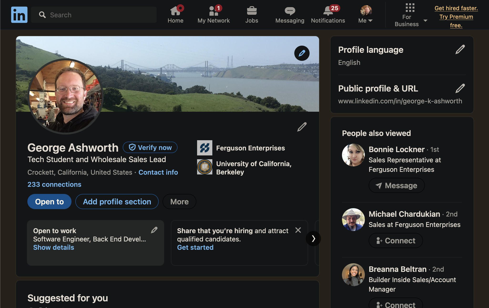
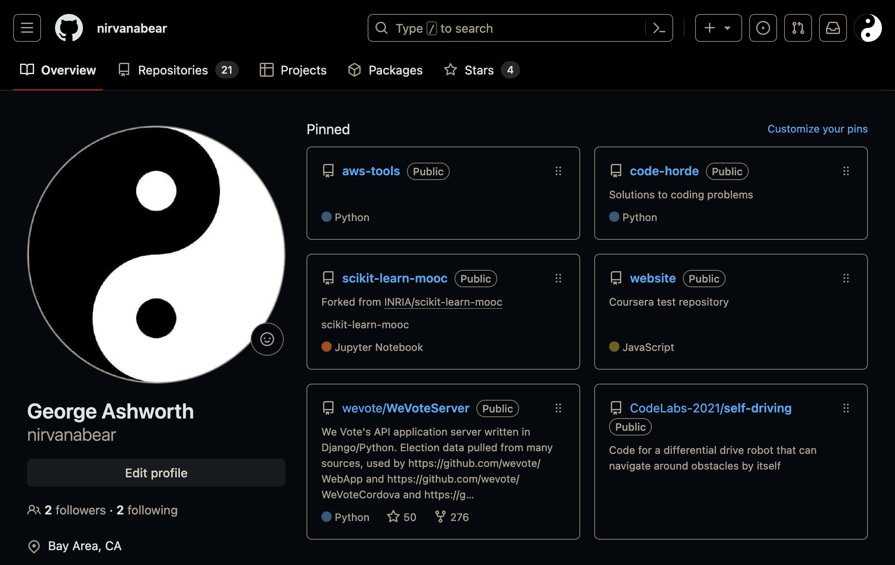
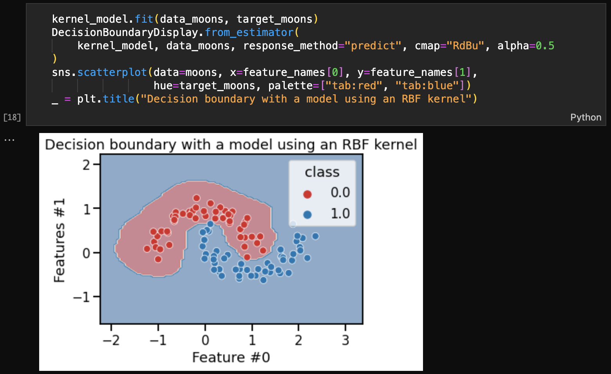
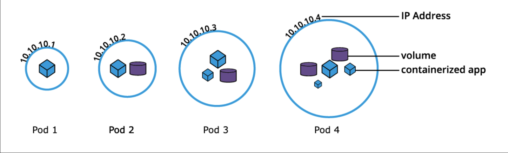
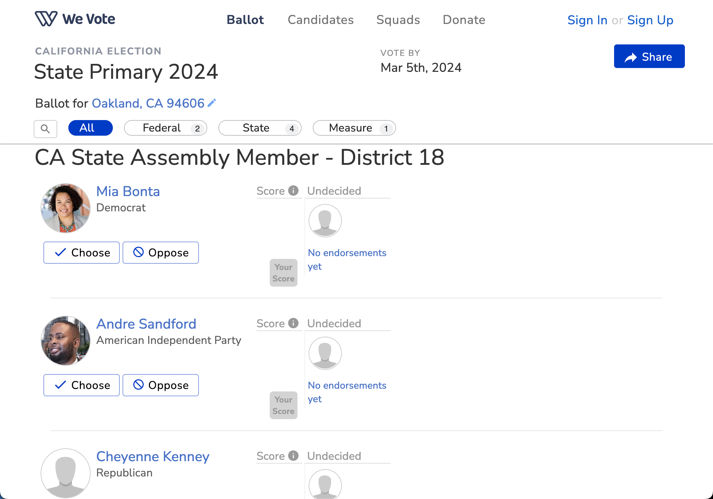
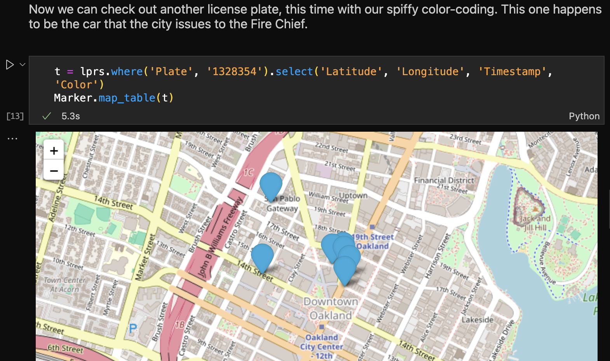

 LinkedIn  GitHub Links to the projects mentioned in my resume: Self-Driving Robot Internship Repository Self-Driving Robot Video Presentation  Inria Machine Learning with scikit-learn Repository  Linux Foundation Intro to Kubernetes  We Vote Unit Test Repository  UC Berkeley Data8x Coding Challenges Repository CalTV: Cal Football vs. Stanfurd